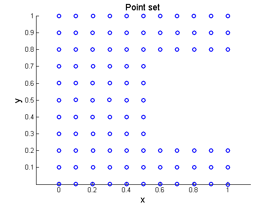
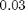
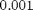
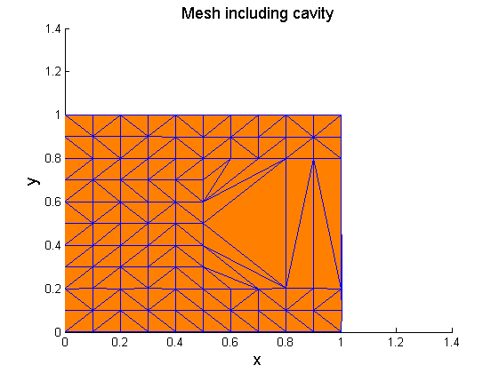
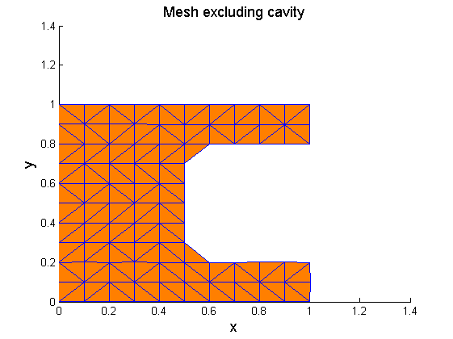

Mesh generation from a 2D gridded point set with a cavity
Contents
Introduction
In this example, a 2-dimensional point set is given, which has an internal cavity. The points form a uniform grid. The idea for the concave mesh creation is to create initially the Delaunay triangulation of the point set and afterwards delete from the mesh the simplices with edge lengths larger than a specified value.
Initial data
Set the random number generator.
rng(1);
Set the dimension of the problem.
d=2;
Define the point set. Create a square with side length equal to 1 containing gridded mesh.
[X,Y]=meshgrid(0:0.1:1); points=[X(:),Y(:)];
Delete the points at the internal cavity.
points((points(:,1)>0.5 & points(:,2)>0.2 & points(:,2)<0.8),:)=[];
Make small perturbations to the point coordinates to avoid numerical instabilities.
points=points+0.001*rand(size(points));
Plot the points defining the region the concave hull of which is to be extracted.
figure('Name','Point set','NumberTitle','off') scatter(points(:,1),points(:,2),... 'marker','o','MarkerEdgeColor',[0 0 1],'LineWidth',2) xlabel('x','FontSize',13); ylabel('y','FontSize',13); title('Point set','FontSize',13) axis equal
Processing
Find the Delaunay triangulation of the point set.
DT=delaunay_nd(points);
Find the squared lengths of the edges of each simplex in the mesh.
edgelength=zeros(size(DT)); for i=1:size(DT,2) j=i+1; if j>size(DT,2) j=j-size(DT,2); end edgevec=points(DT(:,i),:)-points(DT(:,j),:); edgelength(:,i)=sum(edgevec.^2,2); end
Find the simplices with squared edge lengths larger than .
sim2del1=any(edgelength>0.03,2);
Find the simplices with squared edge length lower than . These are created due to the random permutations performed at the initial point set. If no perturbations are performed at the initial data, there is no need for this step.
sim2del2=any(edgelength<0.009,2);
Retain the remaining simplices.
DT2=DT(~(sim2del1 | sim2del2),:);
Plots
Plot the mesh of the point set with the cavity.
figure('Name','Mesh including cavity','NumberTitle','off') patch('Faces',DT,'Vertices',points,... 'FaceColor',[1 0.5 0],'EdgeColor',[0 0 1]); xlabel('x','FontSize',13); ylabel('y','FontSize',13); title('Mesh including cavity','FontSize',13)
Plot the mesh of the point set without the cavity.
figure('Name','Mesh excluding cavity','NumberTitle','off') patch('Faces',DT2,'Vertices',points,... 'FaceColor',[1 0.5 0],'EdgeColor',[0 0 1]); xlabel('x','FontSize',13); ylabel('y','FontSize',13); title('Mesh excluding cavity','FontSize',13)
Contact author
(c) 2014 by George Papazafeiropoulos First Lieutenant, Infrastructure Engineer, Hellenic Air Force Civil Engineer, M.Sc., Ph.D. candidate, NTUA
Email: gpapazafeiropoulos@yahoo.gr
Website: http://users.ntua.gr/gpapazaf/